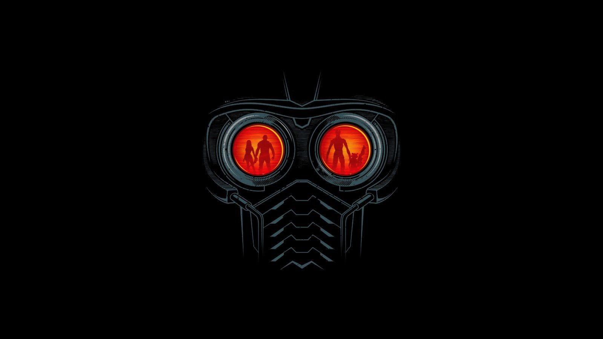

<!DOCTYPE html>
<html lang="en">
<head>
    <meta charset="UTF-8">
    <meta http-equiv="X-UA-Compatible" content="IE=edge">
    <meta name="viewport" content="width=device-width, initial-scale=1.0">
    <title>pagina principal</title>
    <link rel="stylesheet" href="css/styles.css">
    

</head>
<body>
    
</body>
</html>
    <title>estructura de html </html></title>
</head>
<body>
    <header>
        <div id= "subheader">
            <div id=" Logotipo"><p><a href= "#" >FalconMaster</a><p><div>
                <nav>
                    <ul>
                        
                        <li><a href = "#">inicio</a></li>
                        <li><a href = "#">Blog</a></li>
                        <li><a href = "#">Ingresar</a></li>
                        <li><a href = "#">contactenos</a></li>
                                
                    </ul>
        <section id="wrap">
            <section id="main">
                <section id= "slideslow">

                <div>
                    <a href="#"></a>
                </div>
                    
                
            </section>
        </section id="bienvenidos">
        <article >

            <p  align="center"><strong> ANAKIN <br> SKIWALKER <br></strong> <br> </p>
            <p align="center"><strong> EL NEGRO<br> Un gran ejemplar en peligro de extincion</strong> <br> </p>
            <p>
                <ul>
                    <li> es un personaje de ficción en la franquicia de Star Wars</li>
                    <li> Vader aparece en la trilogía original como un
                         antagonista cuyas acciones dirigen la trama</li>
                    <li>mientras que su pasado como Anakin Skywalker y la historia de su 
                        corrupción por Darth Sidious y su paso al Lado Oscuro son centrales en 
                        la narrativa de la trilogía de la precuela.</li>
                    <li> El personaje fue creado por George Lucas y 
                        ha sido retratado por numerosos actores</li>
                     <li>Sus apariciones abarcan las primeras seis películas de Star Wars,
                          así como Rogue One, y su personaje está fuertemente 
                         referenciado en Star Wars: Episodio VII - El despertar de la Fuerza
                    </li>

                </ul>
            </p>
        </article>
        
        <section id="contenido">

                <article>
                    <hgroup><h3>Consulta</h3></hgroup>
            <p class="fecha"> 2 de octubre 2002 </p>
            
            <p align="center"><strong> NEGRA<br> Un gran ejemplar en peligro de extincion</strong> <br> </p>


                </article>

                <article>
                    <hgroup><h2 class="titulo"> Un Paso mas alla de la Humanidad</h2> </hgroup>
                    <p class="fecha"> 2 de octubre 2002 </p>
                    
                    <p>la manera en que nos<br> ayudan de la mejor manera <br> </p>

                    <ul>

                        <li> <a href="#"> jehova es mi guerrero</a></li>
                        <li> <a href="#"> nada me faltara</a></li>
                        <li> <a href="#"> el que mora bajo la sombra del omnipotente</a></li>
                        <li> <a href="#"> no temere a dies mil gentes que se juntes sobre mi </a></li>
                        <li> <a href="#"> jehova pesa los corazones</a></li>
                    </ul>
    
        
        
                        </article>
                    </section>
        </section>

        <aside>
            <footer>
            <section class="widget">
                <article>
                    <hgroup><h3>acerca de ..</h3></hgroup>
                    <p><b>®️todos los derechos reservados®️<b> </p>

            
                </article>
            

            </section id="redes">
            <div class="email"></a></div>
            <div class="youtube"></a></div>
            <div class="facebook"></a></div>
            <div class="twiter"></a></div>

        

            </section>
        
         

                </div>
            </div>


    </header>
</section>
</body>
</html>